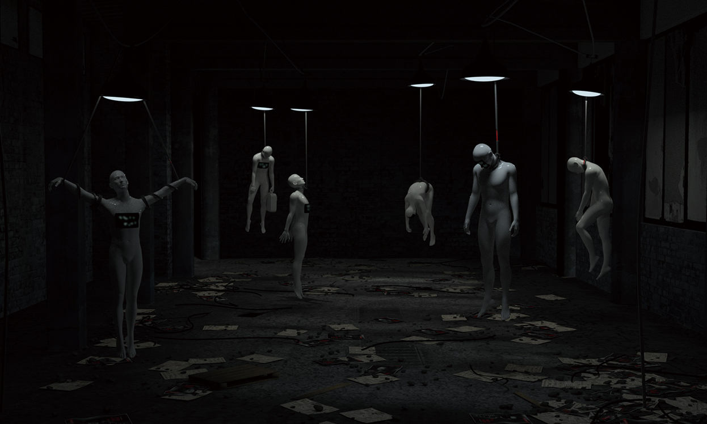
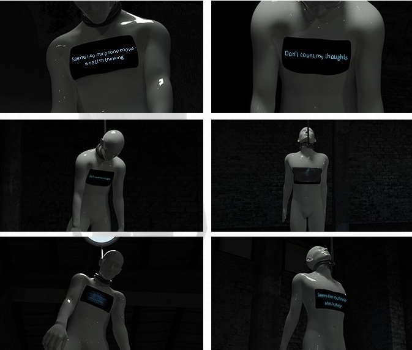
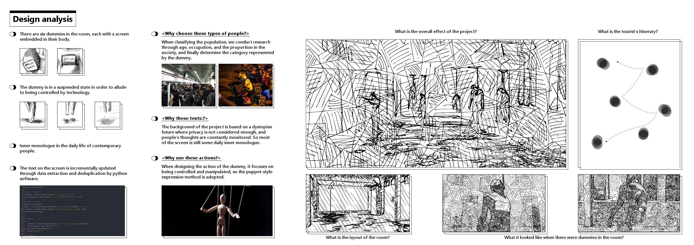
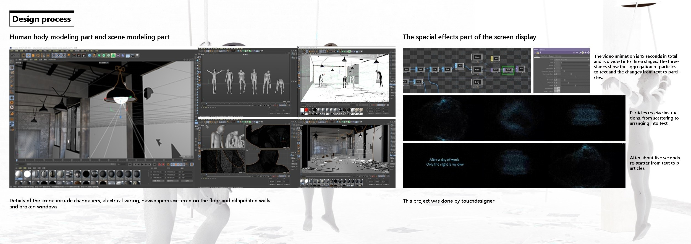
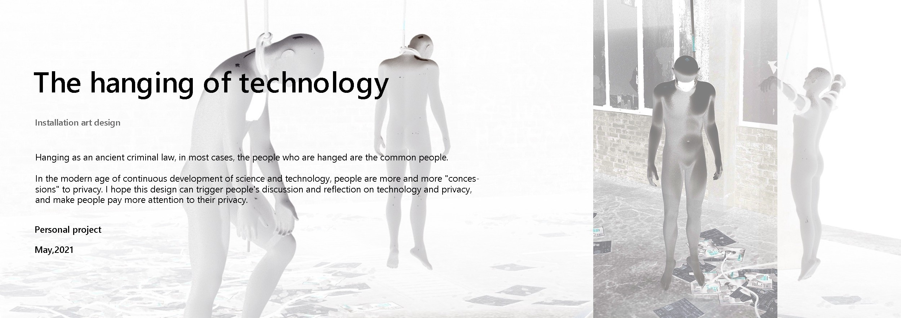
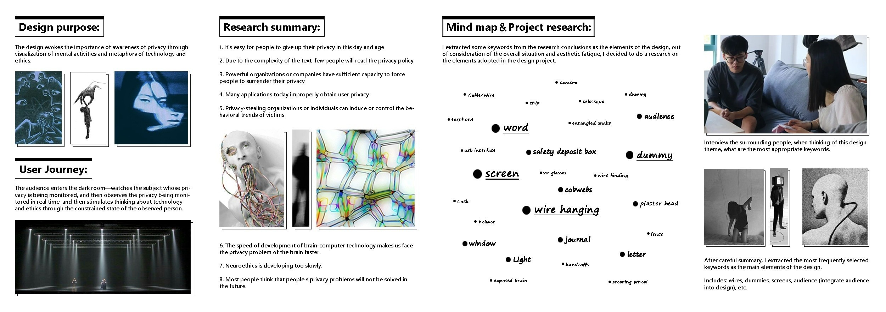
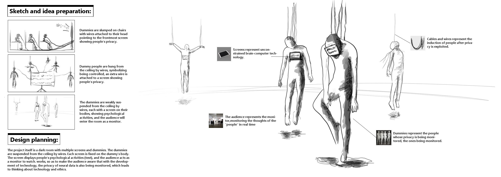
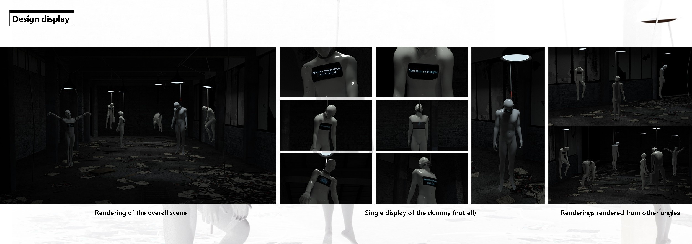

Bodies as interfaces
Six dummies each carry an embedded screen. Their suspended posture and visible wiring give technological control a physical presence in the room.
Who is watching?
Who is being watched?
Six suspended figures turn private inner monologues into public fragments. In a dark room, the audience becomes a witness to the uneasy relationship between technology, control and exposure.

This speculative installation questions a future in which technological systems make our inner lives visible. Suspended bodies, embedded screens and hanging wires place the visitor inside the act of observation.
Six dummies each carry an embedded screen. Their suspended posture and visible wiring give technological control a physical presence in the room.
Texts are presented as daily inner monologues. The portfolio documents Python-based extraction and deduplication to prepare material for the screens.
A 15-second TouchDesigner particle-to-text sequence reveals the monologues over three phases. The work imagines exposure; it does not claim to read a visitor’s thoughts.
Selected drawings, prototypes and interface studies from the original project.






